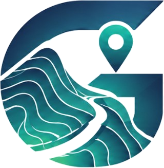

Para activar el acceso real, configura las credenciales públicas de tu proyecto Supabase en supabase-config.js.
supabase-config.js
Ingresa a tu espacio de trabajo de GEOTRACIA.
Al continuar, accedes a tu espacio de trabajo de GEOTRACIA.